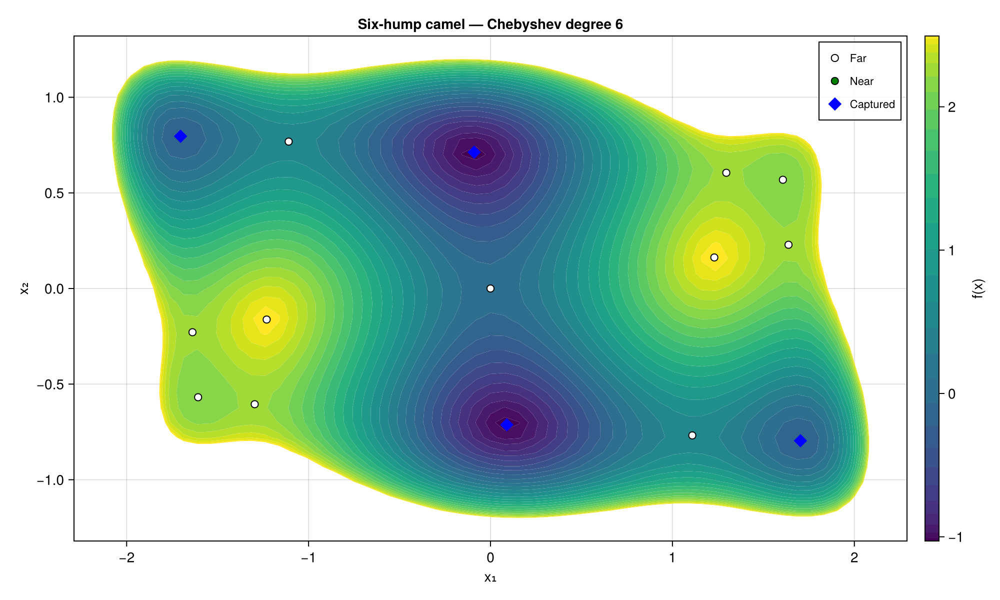
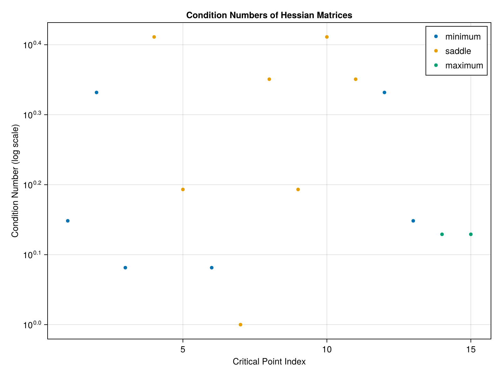
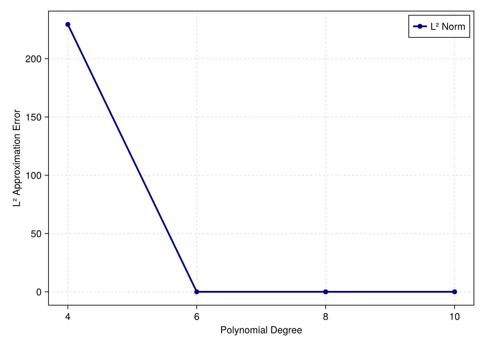
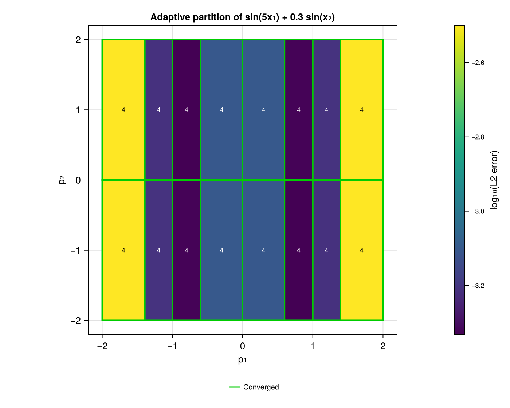
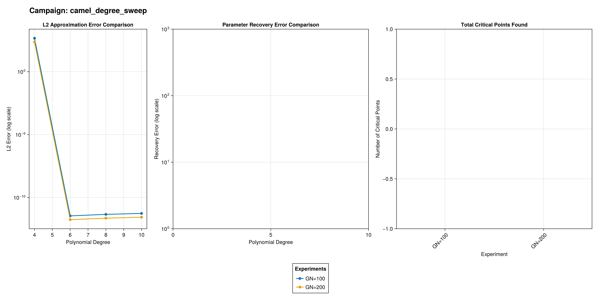

Tutorial
Generated from the package README by docs/make.jl; the test suite executes the same code.
The snippets below form one continuous session: later blocks reuse f, TR, x, df_cp and results from the earlier ones. They are extracted from the README and executed by the test suite, so they run as written; the documentation's Tutorial page is generated from this section and shows the rendered figures.
Level set with critical points
using Globtim, GlobtimPlots
using DynamicPolynomials: @polyvar
import HomotopyContinuation # enables Globtim's :hc solver (`import`: it also exports a `save`)
# 1. Fit a degree-6 Chebyshev polynomial to the six-hump camel function on [-5, 5]^2
f = camel
TR = TestInput(f; dim = 2, center = [0.0, 0.0], sample_range = 5.0, GN = 200)
pol = Constructor(TR, 6; basis = :chebyshev, precision = RationalPrecision)
# 2. Critical points of the approximant, refined on f and classified by their Hessian
@polyvar x[1:2]
sols = solve_polynomial_system(x, 2, 6, pol.coeffs;
basis = pol.basis, precision = pol.precision, normalized = pol.normalized)
df_cp = process_crit_pts(sols, f, TR)
df_cp, df_min = analyze_critical_points(f, df_cp, TR; tol_dist = 0.01, verbose = false)
# 3. Level set of the approximant with the critical points overlaid
fig = cairo_plot_polyapprox_levelset(
adapt_polynomial_data(pol), adapt_problem_input(TR), df_cp, df_min;
chebyshev_levels = true, title = "Six-hump camel — Chebyshev degree 6",
)
save("camel_levelset.png", fig)
fig # the Figure is what a notebook (or the docs tutorial) displays
adapt_polynomial_data / adapt_problem_input wrap Globtim's ApproxPoly and TestInput; the plotting functions only need the AbstractPolynomialData / AbstractProblemInput interface, so any object exposing the same fields (see GenericPolynomialData, GenericProblemInput) can be plotted too.
Morse diagnostics
analyze_critical_points stores the Hessian classification of every critical point (critical_point_type, extreme eigenvalues, condition number) in df_cp:
fig_eig = plot_critical_eigenvalues(df_cp) # smallest positive / largest negative eigenvalue
fig_cond = plot_condition_numbers(df_cp) # κ(H) per critical point, log scale
fig_norm = plot_hessian_norms(df_cp) # ‖H‖ per critical point, colored by Morse type
save("camel_condition_numbers.png", fig_cond)
fig_cond
Degree sweep
plot_discrete_l2 and plot_convergence_analysis take a Dict keyed by degree whose values carry the analyzed critical-point frame (df) and the discrete L2 fit error. The first tracks the fit, the second the spread of the recovered critical points (their nearest-neighbour distances), which stabilizes once the degree resolves the landscape:
results = Dict{Int,Any}()
for d in 4:2:10
pol_d = Constructor(TR, d; basis = :chebyshev, precision = RationalPrecision)
sols_d = solve_polynomial_system(x, 2, d, pol_d.coeffs;
basis = pol_d.basis, precision = pol_d.precision, normalized = pol_d.normalized)
df_d = process_crit_pts(sols_d, f, TR)
df_d, df_min_d = analyze_critical_points(f, df_d, TR; tol_dist = 0.01, verbose = false)
results[d] = (df = df_d, df_min = df_min_d, discrete_l2 = pol_d.nrm)
end
fig_l2 = plot_discrete_l2(results, 4, 10, 2) # ‖f − p_d‖₂ against the degree d
fig_conv = plot_convergence_analysis(results, 4, 10, 2) # max / mean nearest-neighbour distance among the CPs of p_d
save("camel_degree_sweep.png", fig_l2)
fig_l2
Adaptive subdivision
Globtim's adaptive_refine splits the domain until every leaf is approximated to tolerance. The tree can be drawn directly, overlaid on the objective, or turned into an approximation-error heatmap:
g(p) = sin(5 * p[1]) + 0.3 * sin(p[2]) # high frequency along x₁ only
bounds = [(-2.0, 2.0), (-2.0, 2.0)]
tree = adaptive_refine(g, bounds, 4;
l2_tolerance = 0.005, tolerance_mode = :absolute, max_depth = 6, parallel = false)
print_tree_summary(tree)
fig_tree = plot_subdivision_tree(tree)
fig_over = plot_subdivision_on_levelset(tree, g; l2_tolerance = 0.005)
fig_err = plot_subdivision_error_heatmap(tree, g)
# The partition can also be drawn from serialized per-leaf data, without the tree object
leaf_ids = vcat(tree.converged_leaves, tree.active_leaves)
leaf_bounds = [[collect(get_bounds(tree.subdomains[i])[k]) for k in 1:2] for i in leaf_ids]
leaf_l2 = [tree.subdomains[i].l2_error for i in leaf_ids]
leaf_deg = [tree.subdomains[i].degree for i in leaf_ids]
fig_part = plot_subdivision_partition(leaf_bounds, leaf_l2, leaf_deg;
l2_tolerance = 0.005, title = "Adaptive partition of sin(5x₁) + 0.3 sin(x₂)")
save("subdivision_partition.png", fig_part)
fig_part
Experiment and campaign summaries
create_experiment_plots and create_campaign_comparison_plot summarize the tracked statistics of one experiment or of a campaign of experiments. They are duck-typed: any object with the fields used below works, in particular the ExperimentResult / CampaignResults types of GlobtimPostProcessing.
degrees = collect(4:2:10)
l2_errors = [results[d].discrete_l2 for d in degrees]
# One experiment: which statistics were tracked, and their values
experiment = (experiment_id = "camel_GN200", enabled_tracking = ["approximation_quality"])
stats = Dict("approximation_quality" => Dict("degrees" => degrees, "l2_errors" => l2_errors))
fig_exp = create_experiment_plots(experiment, stats; backend = Static)
save_plot(fig_exp, "camel_experiment.png")
# A campaign: several experiments, labelled automatically by the parameters that differ
coarse = (experiment_id = "camel_GN100", metadata = Dict("params_dict" => Dict("GN" => 100)))
fine = (experiment_id = "camel_GN200", metadata = Dict("params_dict" => Dict("GN" => 200)))
campaign = (campaign_id = "camel_degree_sweep", experiments = [coarse, fine])
campaign_stats = Dict(
"camel_GN100" => Dict("approximation_quality" => Dict("degrees" => degrees, "l2_errors" => 2 .* l2_errors)),
"camel_GN200" => stats,
)
labels = generate_experiment_labels(campaign) # ["GN=100", "GN=200"]
fig_cmp = create_campaign_comparison_plot(campaign, campaign_stats; backend = Static)
save_plot(fig_cmp, "camel_campaign.png")
fig_cmp
Interactive 3D surface
plot_polyapprox_3d draws the approximant as a surface with the critical points on it. It lives in the GLMakie extension, so load that backend first:
julia> using GLMakie
julia> plot_polyapprox_3d(adapt_polynomial_data(pol), adapt_problem_input(TR), df_cp, df_min)
julia> plot_polyapprox_3d(adapt_polynomial_data(pol), adapt_problem_input(TR), df_cp, df_min;
rotate = true, filename = "camel_rotation.mp4") # records a turntable animationinteractive_error_explorer(tree, g) and interactive_levelset_explorer are the click-to-zoom / click-to-optimize counterparts of the subdivision plots, and also need GLMakie.